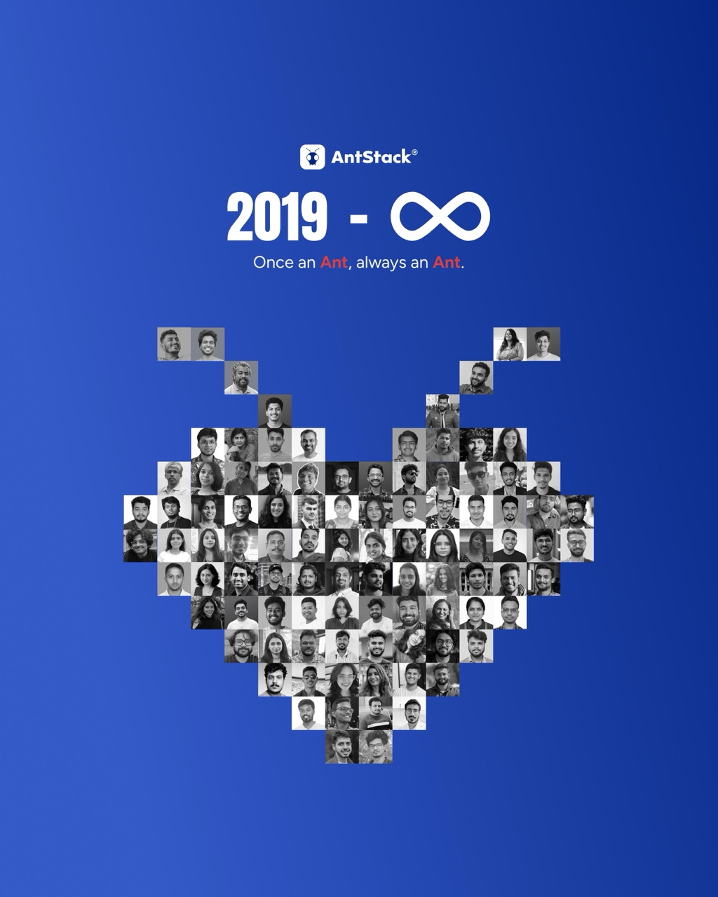

I was having a conversation with a friend the other day who was stuck on a decision. They had a list. A good list. Pros on one side, cons on the other, a third column for things that were technically pros but felt like cons, and a fourth column I did not fully understand. We went back and forth for a while. Every time they picked an option, a new variable showed up from somewhere.
At some point I said, "This reminds me of when people try to buy a car."
Because that one everybody has lived through. You start looking and within a week you have seventeen tabs open and a spreadsheet nobody asked for. This one has the better mileage. That one has the better interior. This one is cheaper but depreciates faster. That one has a five-star safety rating but the service center is forty minutes away. No single car has everything, and the longer you sit with the spreadsheet, the longer you are the person without a car. And even if you do pick one, there is always going to be a newer model next year with better features that makes you wonder if you should have waited. The grass is always greener on the other side, and in this case there is always another side.
That is the trap. Wanting the perfect thing does not get you the perfect thing. It gets you nothing, for longer.
I have been reading Same as Ever by Morgan Housel, and one line from that book has been sitting in my head for weeks. He says we are actually pretty good at predicting the future, except for the surprises, and the surprises tend to be all that matters.
The stuff we spend all our time comparing is the stuff that can fit on a spreadsheet. The stuff that actually shapes how a decision turns out is almost never on the spreadsheet. It is the thing you could not have known. The pothole on a road you did not plan to take. The friend you meet because you picked this job over that one. You were never going to catch it by adding one more column.
There is this Jerry Seinfeld story in the same book that I cannot stop thinking about. Seinfeld is driving around with Jimmy Fallon in some old 1950s car, and Fallon asks if he is worried that the car has no airbag. Seinfeld says, "Be honest, in your whole life how often have you needed an airbag?"
It is a joke. It is also a perfect example of how hard it is for a human being to think in probabilities. We do not feel the difference between a one-in-ten and a one-in-a-million. They both just feel like "maybe." So we compensate by trying to control everything, because certainty feels like the only answer to something we cannot compute.
If you are worried about your parachute and the backup parachute both failing, you probably should not be skydiving in the first place.
This draws a line I did not know how to draw before. There is a point up to which preparation is wise. Check the parachute, check the backup, learn the procedures, train with an instructor. Past that point, the worry you are still carrying is not really about preparation anymore. It is about wanting the jump without the jump.
Where exactly you draw that line is yours. I am not writing this to tell anyone to be reckless, and different people at different stages of life with different responsibilities will (rightly) draw it in different places. The point is just that the line exists. Pretending it does not, and researching forever as a substitute for deciding, is its own kind of risk.
This is also how a lot of good software gets built. The best systems I have worked on were not the ones trying to never fail. They were the ones that failed in small ways, loudly and quickly, and recovered before anyone noticed. You cannot engineer a system that never breaks. You can engineer one that breaks gracefully.
Housel tells one more Seinfeld story in the book that I keep coming back to. Jerry killed his own show when it was at its peak. He later said the reason was this: the only way to know where the top is, is to experience the decline, and he had no interest in doing that. Maybe the show could have kept climbing. Maybe it could not. He was fine not knowing the answer.
Moving from philosophical yapping to personal story,
it was a public holiday in September 2019. I was in my last 30 of notice period at Infosys, fast asleep in my PG room in Bangalore, when my phone rang with a number & Truecaller said it was Prashanth HN. I had known him briefly for about a year by then, through Raalzz, who was already working with him. I picked up, and Prashanth told me his startup was pivoting into services and asked if I wanted to be part of it. He said it was going to be very new for everyone and that it would be a fun ride if I was up for it.
I hung up and immediately called Raalzz. He walked me through the pivot, the thinking behind it, what the focus of the new company was going to be. It sounded exciting in a way things rarely sound exciting over a phone call on a Monday afternoon. I did a lot of reading. I talked to my family, who had already been practical enough to let me walk away from a stable job at a company like Infosys. And then I said yes.
It has not been all rainbows and unicorns, but every day has been more challenging and fun than the last. Joining AntStack has to be one of the best decisions I have ever made for myself.
Today, as this post goes live, we are announcing that AntStack is joining HashedIn by Deloitte for the next chapter of the story. I hadn't thought of us getting acquired when I said yes to this journey, but it led to today, because of a big leap of trust.
